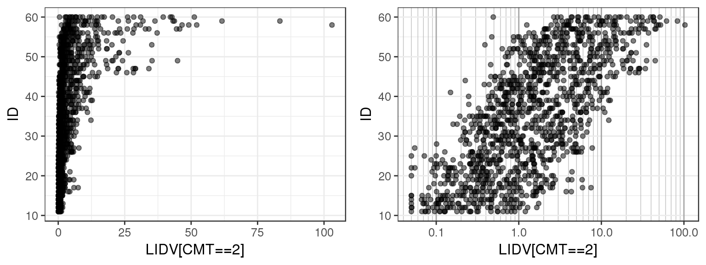
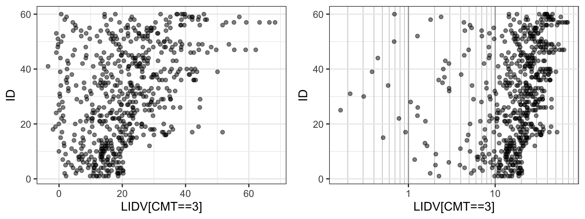
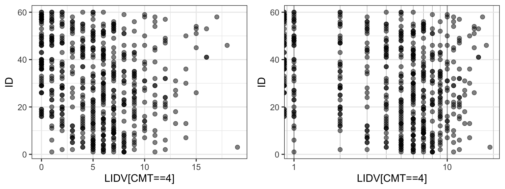
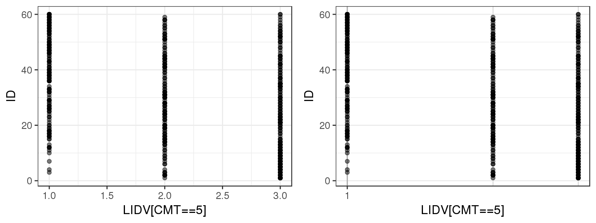
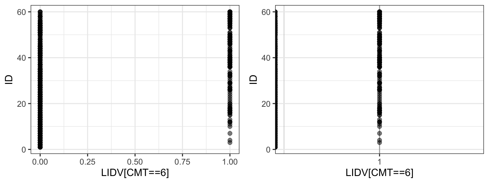
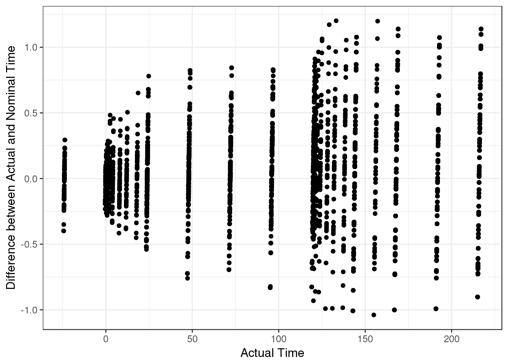
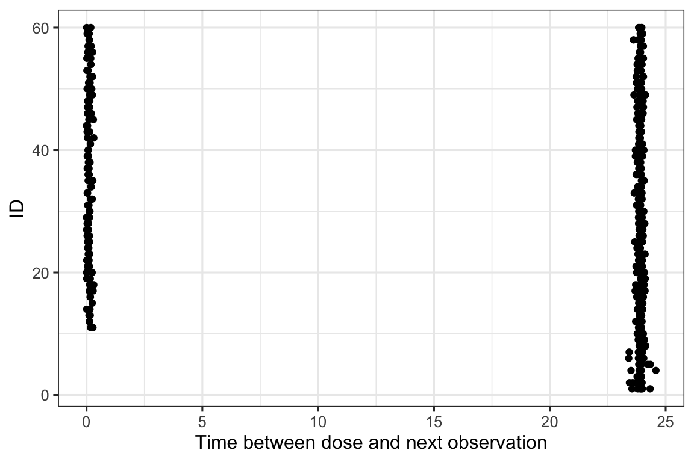
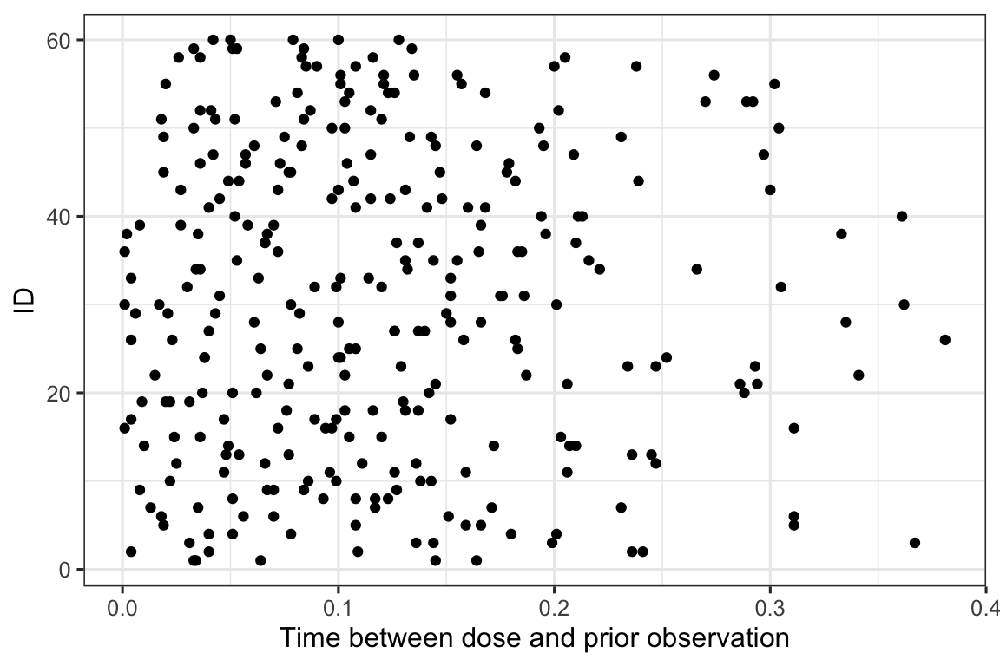
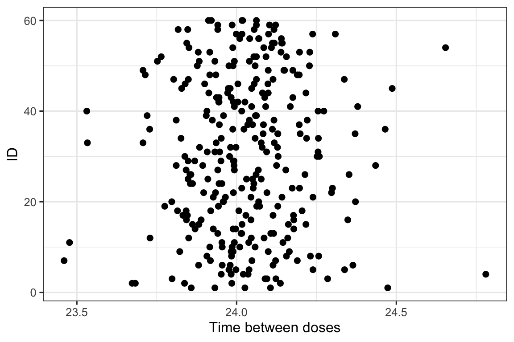

Data Checking
Overview
This document contains exploratory plots for checking integrity of PKPD datasets as well as the R code that generates these graphs. The plots presented here are based on simulated data (see: PKPD Datasets). Data specifications can be accessed on Datasets and Rmarkdown template to generate this page can be found on Rmarkdown-Template. You may also download the Multiple Ascending Dose PK/PD dataset for your reference (download dataset).
Setup
# remove reference to home directory in libPaths
.libPaths(grep("home", .libPaths(), value=TRUE, invert=TRUE))
.libPaths(grep("usr", .libPaths(), value=TRUE, invert=TRUE))
# add localLib to libPaths for locally installed packages
.libPaths(c("localLib", .libPaths()))
# will load from first filepath first, then look in .libPaths for more packages not in first path
# version matches package in first filepath, in the case of multiple instances of a package
# library(rmarkdown)
library(gridExtra)
library(grid)
library(ggplot2)
library(dplyr)
library(RxODE)
library(caTools)
library(DT)
#flag for labeling figures as draft
draft.flag = TRUE
## ggplot settings
theme_set(theme_bw(base_size=12))Define Useful Graphics Functions
# annotation of plots with status of code
AnnotateStatus <- function(draft.flag, log.y=FALSE, log.x=FALSE, fontsize=7, color="grey") {
x.pos <- -Inf
if (log.x)
x.pos <- 0
y.pos <- -Inf
if (log.y)
y.pos <- 0
if(draft.flag) {
annotateStatus <- annotate("text",
label="DRAFT",
x=x.pos, y=y.pos,
hjust=-0.1, vjust=-1.0,
cex=fontsize,
col=color, alpha=0.7, fontface="bold")
} else {
annotateStatus <- NULL
}
return(annotateStatus)
}
# Function to add nicely spaced breaks on log scale (x-axis)
xgx_scale_x_log10 <- function(breaks = xgx_log_breaks_major, minor_breaks= xgx_log_breaks_minor,...){
## xgx_scale_x_log10() modifies ggplot2's scale_x_log10(),
## adding nicely spaced breaks on log scale. xgx_scale_x_log10()
## can be used in much the same was as scale_x_log10(),
## e.g.: ggplot(data=data.frame(x=exp(rnorm(1000)),y=rnorm(1000)),aes(x=x,y=y)) + geom_point() + xgx_scale_x_log10()
xgx_log_breaks_minor <- function(x){
r1 <- range(log10(x));
r <- r1;
r[1] <- floor(r[1])
r[2] <- ceiling(r[2])+1;
breaks <- c()
for (i in seq(r[1],r[2])){
breaks <- c(breaks,seq(2*10^(i-1),10^i-10^(i-1),by=10^(i-1)));
}
breaks <- breaks[breaks <= 10^r1[2]]
breaks <- breaks[breaks >= 10^r1[1]]
return(breaks)
}
xgx_log_breaks_major <- function(x){
r1 <- range(log10(x));
r <- r1;
r[1] <- floor(r[1])
r[2] <- ceiling(r[2])+1;
breaks <- 10^seq(r[1],r[2])
breaks <- breaks[breaks <= 10^r1[2]]
breaks <- breaks[breaks >= 10^r1[1]]
return(breaks)
}
ret <- try(list(scale_x_log10(...,breaks=breaks,minor_breaks = minor_breaks),
theme(panel.grid.minor.x=element_line(color=rgb(0.75,0.75,0.75)),
panel.grid.major.x=element_line(color=rgb(0.65,0.65,0.65)))),silent=TRUE)
if (inherits(ret, "try-error")) return(scale_x_log10(...))
return(ret);
}
# Function to add nicely spaced breaks on log scale (y-axis)
xgx_scale_y_log10 <- function(breaks = xgx_log_breaks_major, minor_breaks= xgx_log_breaks_minor,...){
## xgx_scale_y_log10() modifies ggplot2's scale_x_log10(),
## adding nicely spaced breaks on log scale. xgx_scale_y_log10()
## can be used in much the same was as scale_x_log10(),
## e.g.: ggplot(data=data.frame(x=rnorm(1000),y=exp(rnorm(1000))),aes(x=x,y=y)) + geom_point() + xgx_scale_y_log10()
xgx_log_breaks_minor <- function(y){
r1 <- range(log10(y));
r <- r1;
r[1] <- floor(r[1])
r[2] <- ceiling(r[2])+1;
breaks <- c()
for (i in seq(r[1],r[2])){
breaks <- c(breaks,seq(2*10^(i-1),10^i-10^(i-1),by=10^(i-1)));
}
breaks <- breaks[breaks <= 10^r1[2]]
breaks <- breaks[breaks >= 10^r1[1]]
return(breaks)
}
xgx_log_breaks_major <- function(y){
r1 <- range(log10(y));
r <- r1;
r[1] <- floor(r[1])
r[2] <- ceiling(r[2])+1;
breaks <- 10^seq(r[1],r[2])
breaks <- breaks[breaks <= 10^r1[2]]
breaks <- breaks[breaks >= 10^r1[1]]
return(breaks)
}
ret <- try(list(scale_y_log10(...,breaks=breaks,minor_breaks = minor_breaks),
theme(panel.grid.minor.y=element_line(color=rgb(0.75,0.75,0.75)),
panel.grid.major.y=element_line(color=rgb(0.65,0.65,0.65)))),silent=TRUE)
if (inherits(ret, "try-error")) return(scale_y_log10(...))
return(ret);
}Load Dataset
The plots presented here are based on simulated data (see: PKPD Datasets). You may also download the Multiple Ascending Dose PK/PD dataset for your reference (download dataset).
my.data <- read.csv("../Data/Multiple_Ascending_Dose_Dataset2.csv")
PK.indices = which(my.data$CMT==2 & my.data$TIME > 0)
#add some missing PK data for realism
ind.missing = sample(PK.indices,7)
my.data$LIDV[ind.missing] = NA
#add some duplicated time points for realism
ind.duplicate = sample(PK.indices,8)
my.data = bind_rows(my.data,my.data[ind.duplicate,])
my.data = my.data %>%
arrange(ID,TIME,CMT)
# Define order for factors
my.data$TRTACT <- factor(my.data$TRTACT, levels = unique(my.data$TRTACT[order(my.data$DOSE)]))Overview of number of patients
Overview of number of patients at each dose
patient.summary = my.data %>%
distinct(ID, .keep_all=TRUE) %>%
group_by(DOSE) %>%
count() %>%
arrange(-DOSE)
DT::datatable(patient.summary)Overview of number of PK datapoints at each dose
pk.summary = my.data %>%
filter(CMT==2) %>%
group_by(DOSE) %>%
count() %>%
arrange(-DOSE)
DT::datatable(pk.summary)Check for duplicated time points
duplicated.check = my.data %>%
filter(duplicated(paste(ID,CMT,TIME))) %>%
select(ID, TIME, CMT, LIDV)
n.duplicated = nrow(duplicated.check)There are 8 duplicated time points that should be investigated. They are summarized in the list below.
DT::datatable(duplicated.check)Check for any missing PK data at positive time points
missing.check = my.data %>%
filter(CMT>=2, TIME > 0) %>%
filter(is.na(LIDV)) %>%
select(ID, TIME, CMT, LIDV)
n.missing = nrow(missing.check)There are 7 cases of missing LIDV values. These should be explored.
Checking the data consistency of observations
Plotting observations against ID can give a quick overview of the range of values that the observations take on. You can use this plot to check that observed values are consistent with what you expect. You can also check for any outliers or trends.
For the example multiple ascending dose PKPD dataset, there are several different datatypes defined by different compartments. Let’s plot LIDV vs ID for CMT 2 through 6 to see what range of values LIDV takes on for these different CMT.
## For this example we will subset to ID and LIDV, exploring different values for CMT
for(icmt in seq(2,6)){
data_to_plot <- my.data %>% dplyr::filter(CMT==icmt) %>% dplyr::select(ID, LIDV) ;
gg <- ggplot(data_to_plot, aes(y=ID, x = LIDV))
gg <- gg + geom_point(alpha=0.5)
gg <- gg + xlab(paste0("LIDV[CMT==",icmt,"]"))
gg1 <- gg
gg2 <- gg + xgx_scale_x_log10()
grid.arrange(gg1,gg2,ncol=2)
}
By doing a simple ID checkout you can see that CMT = 2 and 3 represent continuous variables, while CMT = 4, 5 and 6 take on more restricted values. You can tell that CMT 4, 5 and 6 are not concentration but represent some other type of variable.
Let’s checkout the descriptions for each compartment, and see if our conclusions about the observation values make sense.
DT::datatable(unique(my.data[order(my.data$CMT),c("CMT","NAME")]), rownames=FALSE)Checking timing of doses and observations
Swimmer plot with ID vs Time of Event (e.g. Observation, Dose, Inferred Dose)
The following plot displays observation and dosing events for each individual. This can be helpful in determining the ordering of events. For example, ensuring that trough concentrations occur prior to dosing. This plot also gives a nice overview of the subject visits, and if there are any subjects who dropped out before the end of the trial.
For the example PKPD dataset, you can tell that this is a simulated dataset by the uniform spacing of dosing and observation events, and the lack of dropouts.
data_to_plot <- my.data
data_to_plot$EVID = factor(data_to_plot$EVID, levels = c(0,1))
gg <- ggplot(data_to_plot, aes(x=TIME, y = ID))
gg <- gg + geom_point(aes(shape=EVID, color = EVID))
gg <- gg + geom_line(linetype="dashed", aes(group=ID), color = "grey")
gg <- gg + scale_shape_manual(values=c(1,3))
gg <- gg + scale_color_manual(values=c(rgb(0.75,0.25,0.25),rgb(0.25,0.25,0.75)))
gg
Nominal time vs Actual time
In this case, time is in units of hours and so there is no more than one hour difference between actual and nominal time. But if there is a large difference, there could be an error in how the actual time is calculated.
my.data = my.data %>%
mutate(DIFF = TIME-NOMTIME)
g = ggplot(my.data,aes(x=TIME,y=DIFF))
g = g + geom_point()
g = g + labs(x="Actual Time",
y="Difference between Actual and Nominal Time")
print(g)
Dot plot, ID vs Time between dose to first observation
Plotting the ID vs time between dose and first observation can be informative to see if there are any surprises between the dose and the next observation.
The complicated part about this plot is to efficiently generate the time between doses and observations. It would be easy with a for loop, but for loops are terribly inefficient in R. As a hack, you can use Rcpp to generate a highly efficient way to use for loops. The “Data.cpp” file contains the function dataEdaGen to create a list of 3 datasets: - time between doses (II) - time between dose and next observation (DO) - time between dose and last observation (OD)
This also assumes that all of your events are unrolled, that is: - No steady state doses - ADDL/II doses are expanded and added to the dataset.
To use this with modesim, you will have to make sure your ~/.bashrc has the following lines:
export TMPDIR=/modesim/scratch/$(whoami) # Change R's temporary directory
export XDG_RUNTIME_DIR=/modesim/scratch/$(whoami) # Fix all the warnings for starting apps in modesimYou can download the Data.cpp file to examine the code and use the function.
##' This function "unrolls" the ADDL/II dose specification in NONMEM doses.
##'
##' The function adds ADDL/II to the dataset and adds a flag about if the dose is imputed.
##'
##' @param data Data
##' @return Unrolled dataset
##' @author Yuan Xiong and Matthew L. Fidler
unroll.addl <- function(data){
d <- data;
col.names <- toupper(names(data));
names(d) <- col.names;
d$.ImputedDose <- 0;
if (any(col.names == "II") && any(col.names == "ADDL")) {
ds.addl <- d[d$II>0 & d$ADDL>0, ]
ds.exp <- ds.addl[rep(row.names(ds.addl), ds.addl$ADDL), 1:ncol(ds.addl)]
## expand dosing records
ds.exp$TIME <- unlist(sapply(1:nrow(ds.addl),
function(idx) {
seq(ds.addl$ADDL[idx])*ds.addl$II[idx]+ds.addl$TIME[idx]
}))
ds.exp$.InputedDose <- 1;
## attach expanded dosing records to the original dataset
d <- rbind(d, ds.exp)
## sort data and remove II/ADDL to avoid confusion
d <- d[order(d$ID, d$TIME, -d$EVID), -which(names(d) %in% c("II","ADDL"))]
}
d <- d %>% mutate(EVID=ifelse(is.na(EVID),0L,EVID)) %>% mutate(Event=factor(ifelse(EVID>0, ifelse(.ImputedDose==1, 2L, 1L), 0L),c(0L,1L,2L),c("Observation", "Dosing","Inputed Dosing")))
}
Rcpp::sourceCpp("Data.cpp")
d2<- my.data
d2$TIME <- d2$TIME
lst <- dataEdaGen(unroll.addl(d2));
ggplot(lst$DO,aes(DO, ID)) + geom_point() + xlab("Time between dose and next observation")
With this plot you can see there is either around 24 or 0 hours between the dose and the next observation.
Dot plot, ID vs Time between last observation to next dose
Plotting the ID vs time between last observation and next dose can be informative to see if there are any surprises between the dose and the prior observation.
ggplot(lst$OD,aes(OD, ID)) + geom_point() + xlab("Time between dose and prior observation")
This shows that there is very little time between dose and prior observation (less than half an hour). If this was a real dataset, this would be quite fishy.
Dot plot, ID vs Time between doses
The following plot shows the dosing interval between the doses.
ggplot(lst$II,aes(II, ID)) + geom_point() + xlab("Time between doses")
In this case, the doses are approximately 24 hours apart. There is some variability around this so it could have come from actual dosing information.
R Session Info
sessionInfo()## R version 3.6.1 (2019-07-05)
## Platform: x86_64-pc-linux-gnu (64-bit)
## Running under: OpenShift Enterprise
##
## Matrix products: default
## BLAS/LAPACK: /CHBS/apps/EB/software/imkl/2019.1.144-gompi-2019a/compilers_and_libraries_2019.1.144/linux/mkl/lib/intel64_lin/libmkl_gf_lp64.so
##
## locale:
## [1] LC_CTYPE=en_US.UTF-8 LC_NUMERIC=C
## [3] LC_TIME=en_US.UTF-8 LC_COLLATE=en_US.UTF-8
## [5] LC_MONETARY=en_US.UTF-8 LC_MESSAGES=en_US.UTF-8
## [7] LC_PAPER=en_US.UTF-8 LC_NAME=C
## [9] LC_ADDRESS=C LC_TELEPHONE=C
## [11] LC_MEASUREMENT=en_US.UTF-8 LC_IDENTIFICATION=C
##
## attached base packages:
## [1] grid stats graphics grDevices utils datasets methods
## [8] base
##
## other attached packages:
## [1] stringr_1.4.0 survminer_0.4.6 ggpubr_0.2.3 magrittr_1.5
## [5] survival_3.1-7 knitr_1.25 broom_0.5.3 DT_0.9
## [9] caTools_1.17.1.2 RxODE_0.9.1-8 xgxr_1.0.7 zoo_1.8-6
## [13] gridExtra_2.3 tidyr_1.0.0 dplyr_0.8.3 ggplot2_3.2.1
##
## loaded via a namespace (and not attached):
## [1] nlme_3.1-142 matrixStats_0.55.0 bitops_1.0-6
## [4] lubridate_1.7.4 RColorBrewer_1.1-2 rstan_2.19.2
## [7] tools_3.6.1 backports_1.1.5 utf8_1.1.4
## [10] R6_2.4.0 lazyeval_0.2.2 colorspace_1.4-1
## [13] lotri_0.1.1 withr_2.1.2 tidyselect_0.2.5
## [16] prettyunits_1.0.2 processx_3.4.1 compiler_3.6.1
## [19] cli_1.1.0 binom_1.1-1 labeling_0.3
## [22] scales_1.0.0 survMisc_0.5.5 callr_3.3.2
## [25] mvnfast_0.2.5 digest_0.6.22 StanHeaders_2.19.0
## [28] rmarkdown_1.16 PreciseSums_0.3 pkgconfig_2.0.3
## [31] htmltools_0.4.0 fastmap_1.0.1 highr_0.8
## [34] htmlwidgets_1.5.1 rlang_0.4.1 shiny_1.4.0
## [37] farver_1.1.0 generics_0.0.2 jsonlite_1.6
## [40] crosstalk_1.0.0 inline_0.3.15 loo_2.1.0
## [43] Matrix_1.2-17 fansi_0.4.0 Rcpp_1.0.3
## [46] munsell_0.5.0 lifecycle_0.1.0 stringi_1.4.3
## [49] yaml_2.2.0 MASS_7.3-51.4 pkgbuild_1.0.6
## [52] plyr_1.8.4 parallel_3.6.1 promises_1.1.0
## [55] crayon_1.3.4 lattice_0.20-38 splines_3.6.1
## [58] pander_0.6.3 sys_3.3 zeallot_0.1.0
## [61] ps_1.3.0 pillar_1.4.2 markdown_1.1
## [64] ggsignif_0.6.0 reshape2_1.4.3 codetools_0.2-16
## [67] stats4_3.6.1 glue_1.3.1 packrat_0.5.0
## [70] evaluate_0.14 dparser_0.1.8 data.table_1.12.6
## [73] png_0.1-7 vctrs_0.2.0 tweenr_1.0.1
## [76] httpuv_1.5.2 gtable_0.3.0 purrr_0.3.3
## [79] polyclip_1.10-0 km.ci_0.5-2 assertthat_0.2.1
## [82] xfun_0.10 ggforce_0.3.1 mime_0.7
## [85] xtable_1.8-4 later_1.0.0 rsconnect_0.8.15
## [88] tibble_2.1.3 memoise_1.1.0 KMsurv_0.1-5
## [91] units_0.6-5 ellipsis_0.3.0